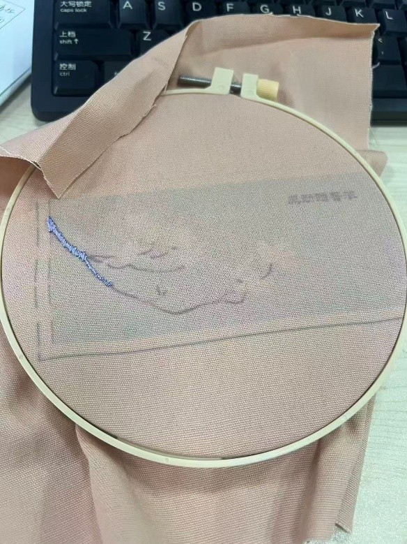
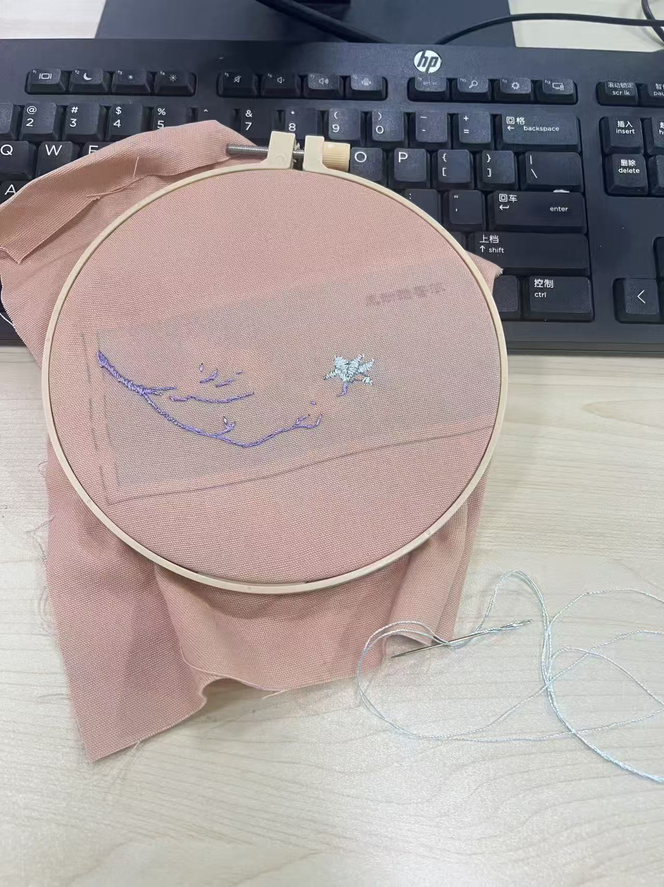
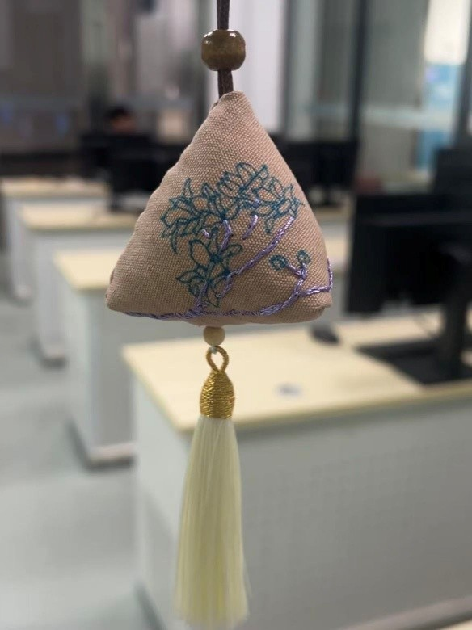

在具体创作中，我大胆地进行了一场“古典与现代的碰撞”。
色彩之韵： 我吸取传统汉绣中的配色智慧，选用了沉静温婉的“退红色”作为基底。这种红，不张扬、不刺眼，仿佛历经岁月洗礼后沉淀下的光泽，内敛而温暖，为整个作品定下了典雅复古的基调。
主题之魂： 玉兰花，自古便是高洁、坚贞与报恩的象征，其花姿挺拔，花香清远，是古典绘画与工艺中常见的题材。我以玉兰为主题，意在传递一份清新脱俗、昂扬向上的精神气韵。
技法之新： 作品的核心突破在于“刺绣”与“绘画”的结合。我并未完全采用汉绣中铺满绣实的“缎面绣”来表现所有细节，而是巧妙地将其与绘画技法相融。
- 枝干的力道： 我使用紫色的丝线，以富于表现力的笔触勾勒出玉兰的枝干。紫色，在传统中是尊贵与神秘的颜色，在此处则赋予了枝干一种超越现实的、如同水墨画般的艺术感。部分枝干采用“回针绣”强化轮廓线条，使其柔中带刚，展现出生命的韧性与力量。

- 花朵的灵动： 花朵部分，是我艺术探索的焦点。我采用了蓝色的丝线进行刺绣，蓝色象征着沉静、理智与深远，与温暖的退红底布形成美妙的对比，瞬间点亮了整个画面。花朵并非完全绣满，而是将“缎面绣”与绘画中的渲染、留白技法结合：花瓣根部绣线密实，颜色饱满，越向边缘，针脚逐渐稀疏，甚至过渡到布料的底色，仿佛花朵是从布料中自然生长出来，又似水墨在宣纸上晕染开的效果。这种“绣绘结合”的手法，使得玉兰花既有刺绣的精致肌理与光泽，又拥有了绘画的飘逸与空灵，打破了传统刺绣的边界，带来了全新的视觉体验。

